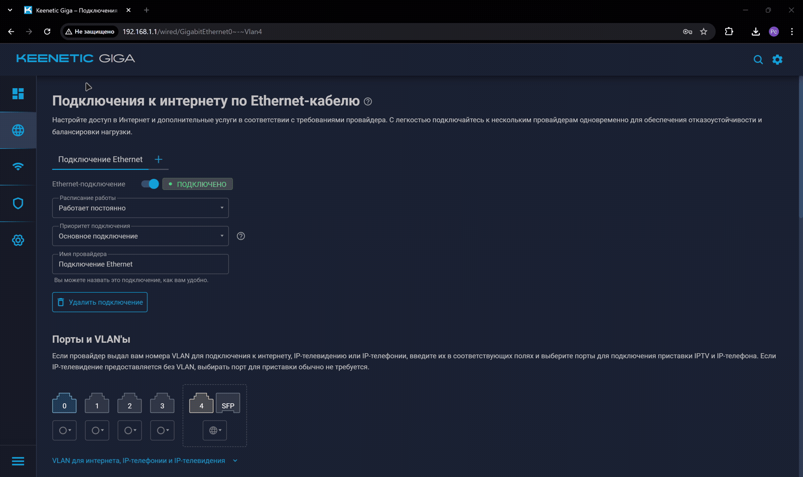
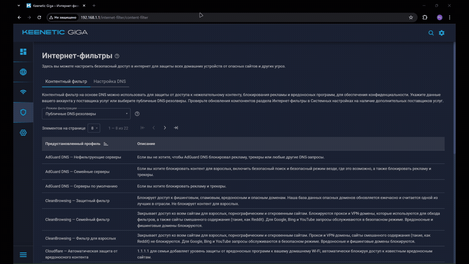

Установка и настройка VLESS на Keenetic¶
Поддерживаемое оборудование¶
| Модель | CPU | RAM | USB | VPN (WireGuard) | VLESS (реально) |
|---|---|---|---|---|---|
| Hopper | 2×900 MHz | 256 MB | USB 3.0 | ~130 Mbps ([Keenetic][1]) | 80–120 Mbps |
| Giga | 2×1.3 GHz | 512 MB | USB 3.0 | ~400–500 Mbps | 250–400 Mbps |
| Hero | 2×1.3 GHz | 512 MB | USB 3.0 + 2.0 | ~460 Mbps ([Keenetic][1]) | 350–500 Mbps |
| Titan | 3×1.8 GHz | 1 GB | USB 3.2 + 2.0 | ~900 Mbps ([Keenetic][1]) | 600–900 Mbps |
- Необходимо сбросить настройки wifi роутера до заводских настроек.
- Подгатавливаем флешку.
Приоритеты подключений¶
- Перейдите в раздел Приоритеты подключений → Политики доступа в интернет
-
Создайте политику с именем
XKeen -
Выберите способ доступа к интернету — отметьте провайдера или нескольких
SWAP
Доступна «Многопутевая передача». Используйте её, если у вас два провайдера.
-
Перейдите в раздел Приоритеты подключений → Применение политик
-
Добавьте в созданную политику
XKeenустройства

Xkeen
Все клиенты или сеть, подключённые к политике XKeen, будут работать через прокси.
Перенесем сервисы Keenetic с 443 порта на другой порт¶
CLI
- Переходим в CLI роутера, данную информацию вводим с троку браузера.
-
Задаём новый порт:
-
{port}: Здесь указываем новый порт, Например 5443, 8443 - С данного порта будет доступено удаленное управление KEENETIC -
Сохраняем параметры
Установка системы пакетов репозитория Entware на USB-накопитель¶
- Необходимо любая флешка. Если будем использовать файл подкачки, то лучше использовать высокоростную.
- Необходимо скачать и установить программу MiniTool Partition Wizard Free Edition
- Создать два раздела swap - подкачка и отдельный раздел отформатированный под EXT4, где будет распологаться XKeen.
SWAP
Ядро системы имеет ограничение на размер области SWAP. Обычно не требуется более чем в три раза превышать размер ОЗУ области. Если размер раздела превышает системное ограничение, в журнал будет выведено предупреждение об этом (например, такое: Truncating oversized swap area, only using 2097152k out of 8388604k) и использоватьс
я в качестве SWAP будет лишь часть выделенного раздела. Справочная информация KEENETIC
 После того, как отформатировали флешку в нужные разделы, его необходимо вставить в KEENETIC
После того, как отформатировали флешку в нужные разделы, его необходимо вставить в KEENETIC
Установка необходимых компонентов KEENETIC¶
Управление → Параметры системы → Компоненты
Набор необходимых компонентов
- Интерфейс USB
- Файловая система Ext
- Общий доступ к файлам и принтерам по протоколу SMB
- Поддержка открытых пакетов
- Прокси-сервер DNS-over-TLS
- Прокси-сервер DNS-over-HTTPS
- Протокол IPv6
- Модули ядра подсистемы Netfilter
ВАЖНО !
Важно: После установки компонентов роутер может автоматически перезагрузиться. Дождитесь полной загрузки системы.
СОВЕТ
Если какого-то компонента нет — обновите прошивку Keenetic до последней версии.

Установка Entware (OPKG)¶
Entware (OPKG) — это менеджер пакетов Linux, необходимый для установки Xray, VLESS и скрипта XKeen. Для установки требуется USB-накопитель с файловой системой EXT4.
- Убедитесь, что USB-накопитель подключён и отображается в веб-интерфейсе роутера.
В веб-интерфейсе Keenetic перейдите в Приложения → Диски и принтеры
СОВЕТ
Если накопитель не отображается — убедитесь, что установлены компоненты USB и Файловая система EXT4.
- Выбор архива Entware в зависимости от модели роутера
Entware
| Архитектура | Архив | Поддерживаемая модель |
|---|---|---|
| 🟢 mipsel | mipsel-installer.tar.gz | 4G (KN-1212) |
| 🟢 mipsel | mipsel-installer.tar.gz | Omni (KN-1410) |
| 🟢 mipsel | mipsel-installer.tar.gz | Extra (KN-1710) |
| 🟢 mipsel | mipsel-installer.tar.gz | Extra (KN-1711) |
| 🟢 mipsel | mipsel-installer.tar.gz | Extra (KN-1713) |
| 🟢 mipsel | mipsel-installer.tar.gz | Giga (KN-1010) |
| 🟢 mipsel | mipsel-installer.tar.gz | Giga (KN-1011) |
| 🟢 mipsel | mipsel-installer.tar.gz | Ultra (KN-1810) |
| 🟢 mipsel | mipsel-installer.tar.gz | Viva (KN-1910) |
| 🟢 mipsel | mipsel-installer.tar.gz | Viva (KN-1912) |
| 🟢 mipsel | mipsel-installer.tar.gz | Viva (KN-1913) |
| 🟢 mipsel | mipsel-installer.tar.gz | Giant (KN-2610) |
| 🟢 mipsel | mipsel-installer.tar.gz | Hero 4G (KN-2310) |
| 🟢 mipsel | mipsel-installer.tar.gz | Hero 4G (KN-2311) |
| 🟢 mipsel | mipsel-installer.tar.gz | Hopper (KN-3810) |
| 🟢 mipsel | mipsel-installer.tar.gz | Zyxel Keenetic II / III |
| 🟢 mipsel | mipsel-installer.tar.gz | Extra / Extra II |
| 🟢 mipsel | mipsel-installer.tar.gz | Giga II / III |
| 🟢 mipsel | mipsel-installer.tar.gz | Omni / Omni II |
| 🟢 mipsel | mipsel-installer.tar.gz | Viva |
| 🟢 mipsel | mipsel-installer.tar.gz | Ultra / Ultra II |
| 🟡 mips | mips-installer.tar.gz | Ultra SE (KN-2510) |
| 🟡 mips | mips-installer.tar.gz | Giga SE (KN-2410) |
| 🟡 mips | mips-installer.tar.gz | DSL (KN-2010) |
| 🟡 mips | mips-installer.tar.gz | Skipper DSL (KN-2112) |
| 🟡 mips | mips-installer.tar.gz | Duo (KN-2110) |
| 🟡 mips | mips-installer.tar.gz | Hopper DSL (KN-3610) |
| 🟡 mips | mips-installer.tar.gz | Zyxel Keenetic DSL / LTE / VOX |
| 🔵 aarch64 | aarch64-installer.tar.gz | Peak (KN-2710) |
| 🔵 aarch64 | aarch64-installer.tar.gz | Ultra (KN-1811) |
| 🔵 aarch64 | aarch64-installer.tar.gz | Giga (KN-1012) |
| 🔵 aarch64 | aarch64-installer.tar.gz | Hopper (KN-3811) |
| 🔵 aarch64 | aarch64-installer.tar.gz | Hopper SE (KN-3812) |
-
В веб-интерфейсе роутера перейдите в
Приложения→Диски и принтеры. -
Выберите подключённый USB-накопитель и нажмите Создать папку.
-
Назовите папку
installи поместите в неё ранее скачанный архивEntware. -
Запуск установки Entware
- В веб-интерфейсе Keenetic:
Приложения→OPKG - Выберите USB-накопитель и в поле Init-скрипт укажите:
- В веб-интерфейсе Keenetic:
Успешная установка
Успешная установка Entware отображается в системном журнале без ошибок. После этого можно переходить к подключению по SSH.
ВАЖНО !!!
Важно! Если Entware не устанавливается — проверьте: - правильность выбранного архива - файловую систему EXT4 - корректную работу USB-накопителя
Подключение по SSH¶
Подключитесь к роутеру по SSH (Putty / MobaXterm):
IP: 192.168.1.1 Порт: 22 или 222 Логин: root Пароль: keenetic При вводе пароля символы не отображаются
Подключение, для того чтобы запустить cmd выполните слеующию комбинацию win + r
следующей комбинацией подключаемся:
Пароль
Обновите пакеты Entware:
Установка XKeen (Hysteria2 / Vless)¶
Скачайте и запустите установщик XKeen:
opkg install curl tar unzip && curl -sOfL https://raw.githubusercontent.com/RockBlack-VPN/XKeen/main/install.sh && chmod +x ./install.sh && ./install.sh
ВАЖНО! Если установка не запускается, води команды по отдельности. После эиого должно заработать.
Успешная установка
Успешная установка Entware отображается в системном журнале без ошибок. После этого можно переходить к подключению по SSH.
Во время установки, если есть необходимость включайте следующее:
- GeoIP
- GeoSite
- Автообновление
- Выберите ядро проксирования для загрузки и установки:
3. Xray + Mihomo
Необходимо сгенерировать конфигурационный файл config.yaml¶
-
Переходим на генератор конфигурация config.yaml. После генерации конфигурации, скачиваем данный файл.
-
Заходим в настройки Wifi роутера KEENETIC и переходим в
Управление-> Приложение, переходим в файловую систему флешки и переходим к следующей папке/etc/mihomo/В папкеmihomoзаменяем файлconfig.yaml.
Запуск Proxy¶
- Переключаемся на ядро Mihomo
- Проверяем статус запуска Xkeen
Подключение к панели Zashboard¶
Для мониторинга и управления необходимо использовать веб панель:
ОТкрытие сервисных портов¶
💬 Telegram
📞 Viber
🎤 Discord
🎮 Throne and Liberty
🎮 Roblox
🎮 Xbox Cloud Gaming
🎮 Supercell
🟩 Minecraft Java
Перезапуск